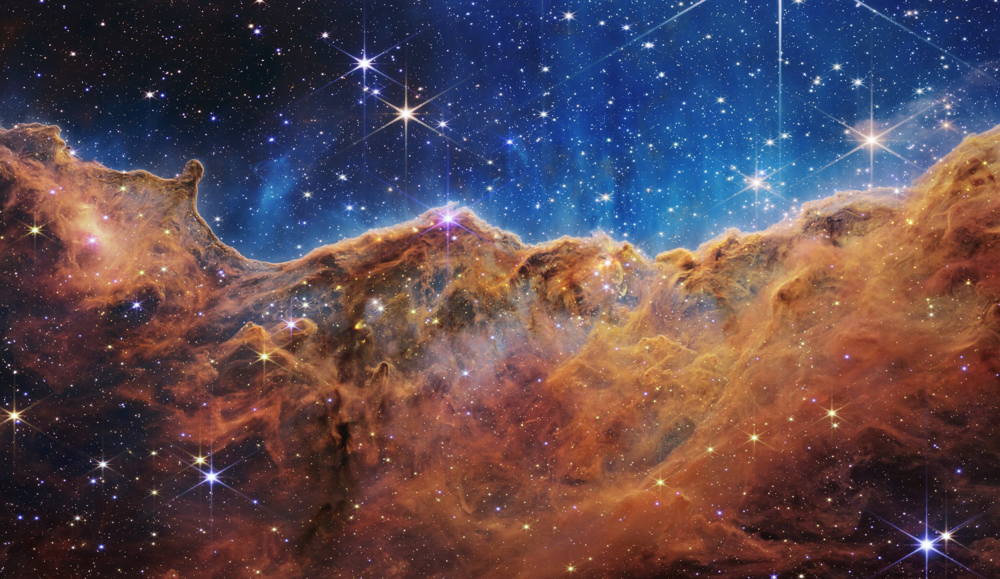
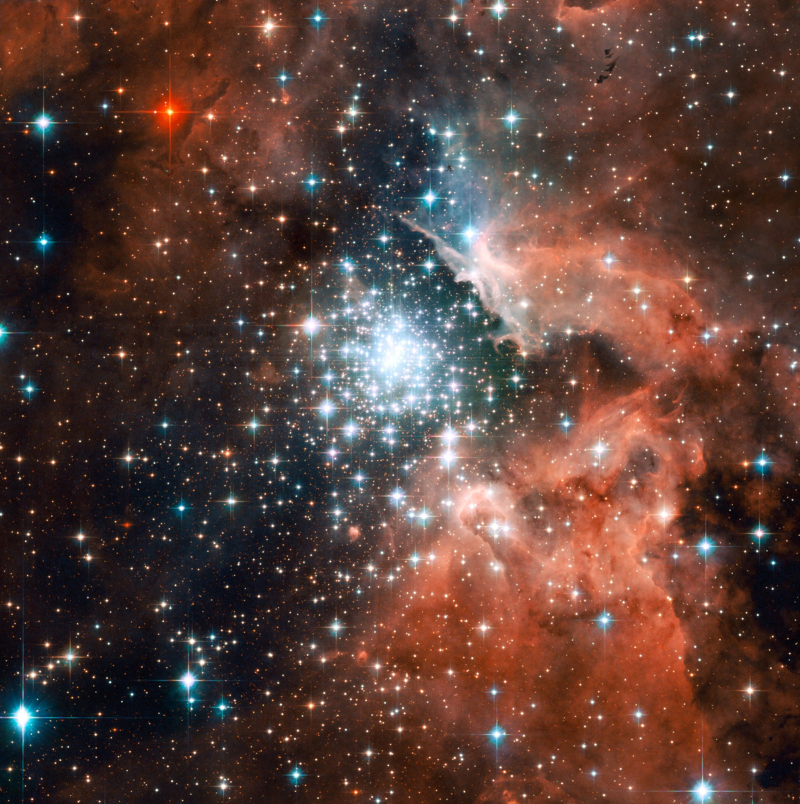
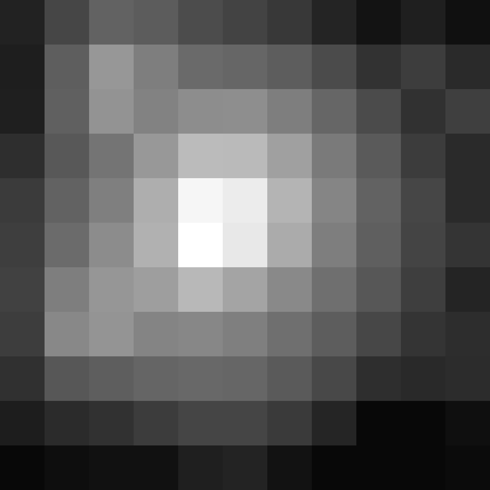
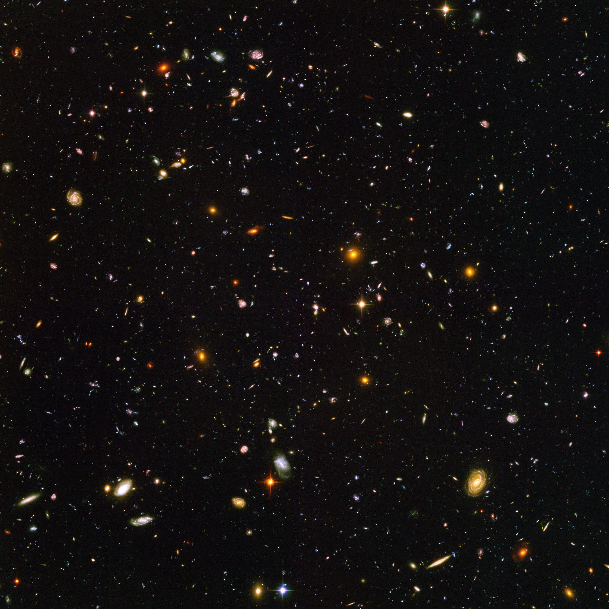
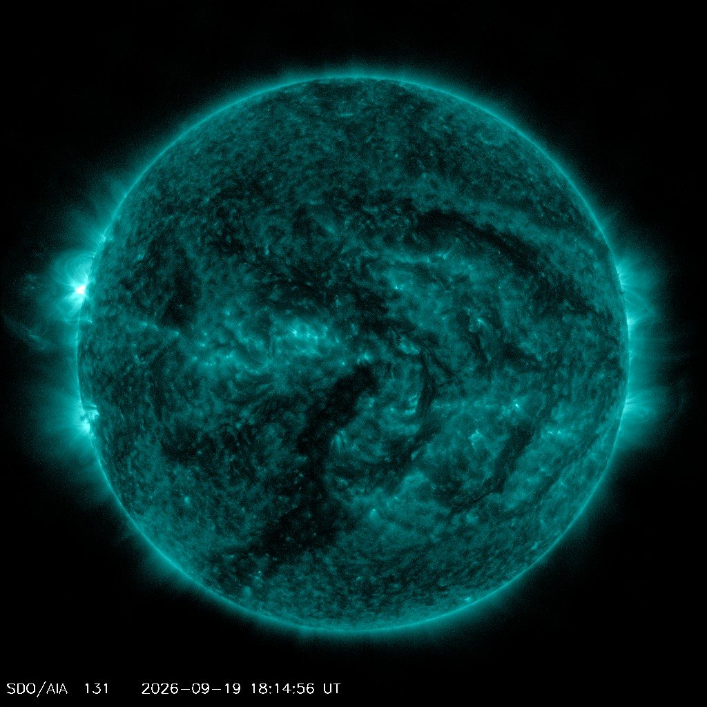
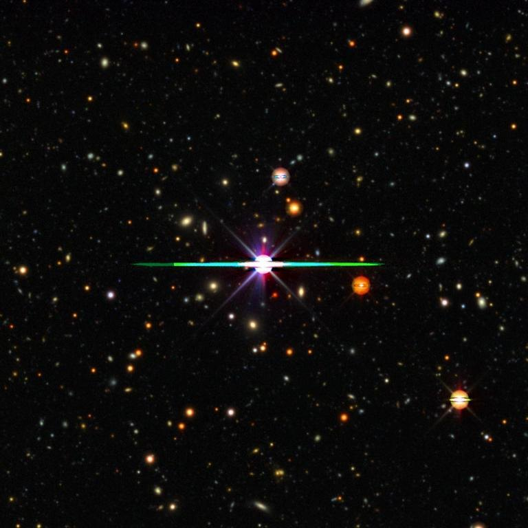
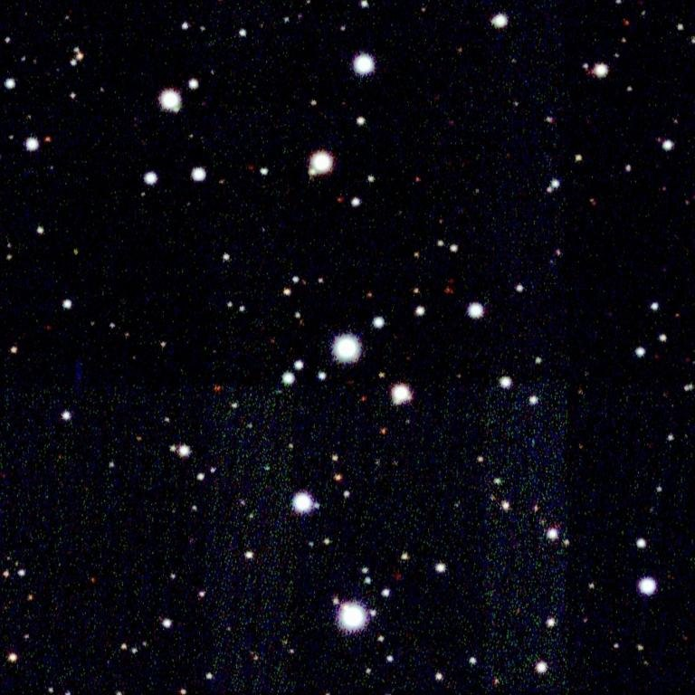
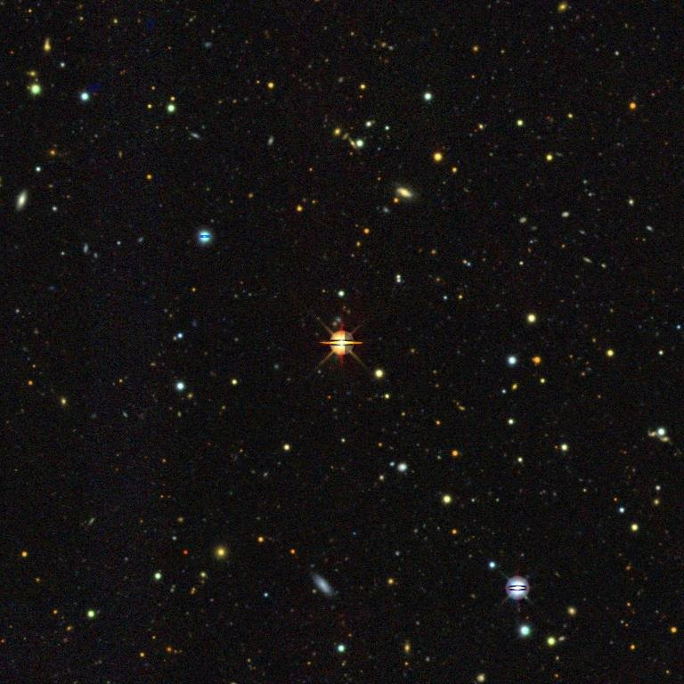

Lab
Experiments on real stars.
NASA · ESA · CSA · STScI · Webb, Carina Nebula
i

Star thermometer
NASA · ESA
i
Extreme star cluster bursts into life (NGC 3603)
NASA, ESA and the Hubble Heritage (STScI/AURA)-ESA/Hubble Collaboration
CC BY 4.0
Source ↗
Hear a star
NASA TESS mission
i
WASP-18 in TESS pixels, sector 104 (between dips)
NASA TESS mission, via MAST; rendered by Planet Hunter
Public domain (NASA data)
Source ↗
Hubble diagram
NASA · ESA
i
Hubble sees galaxies galore (Hubble Ultra Deep Field)
NASA, ESA, and S. Beckwith (STScI) and the HUDF Team
CC BY 4.0
Source ↗
Chemical fingerprints
NASA SDO/AIA
i
NASA SDO/AIA 131 Å image of the whole Sun, 2026-09-19 18:14 UTC, 2 min before the flare peak (18:17 UTC) of this flare. 131 Å shows plasma near 10 million °C, where flares glow brightest. The source reports the flare at N14E90 (NOAA active region 14535): on the left (east) edge of the disk, 14° north of the equator.
Courtesy of NASA/SDO and the AIA, EVE, and HMI science teams
Not copyrighted (NASA SDO image-use rules); credit line required
Source ↗{kind=link}
Star labs
Find a star →
WASP-18
Star lab · archive photo
i
DESI Legacy Imaging Surveys DR10 colour cutout, 7.2′ around WASP-18
DESI Legacy Imaging Surveys DR10, colour HiPS by CDS; cut with CDS hips2fits
CC BY 4.0 (Legacy Surveys; acknowledgement required)
Source ↗
WASP-121
Star lab · archive photo
i
SkyMapper DR1 colour cutout, 7.2′ around WASP-121
SkyMapper Southern Sky Survey DR1 (ANU), colour HiPS by CDS; cut with CDS hips2fits
CC BY 4.0 (SkyMapper; acknowledgement required)
Source ↗
WASP-43
Star lab · archive photo
i
DESI Legacy Imaging Surveys DR10 colour cutout, 7.2′ around WASP-43
DESI Legacy Imaging Surveys DR10, colour HiPS by CDS; cut with CDS hips2fits
CC BY 4.0 (Legacy Surveys; acknowledgement required)
Source ↗
TOI-700
Star lab · archive photo
i
DESI Legacy Imaging Surveys DR10 colour cutout, 7.2′ around TOI-700
DESI Legacy Imaging Surveys DR10, colour HiPS by CDS; cut with CDS hips2fits
CC BY 4.0 (Legacy Surveys; acknowledgement required)
Source ↗What the lab isAbout
Small experiments that use real measurements of real stars. Each one says which numbers are measured and which are estimates.